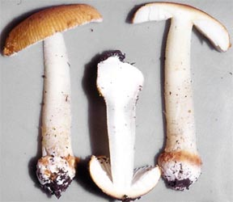


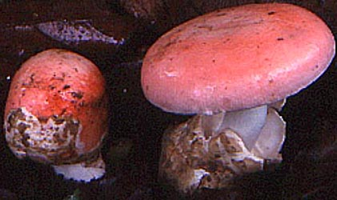


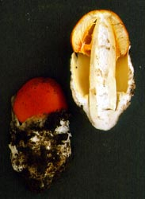

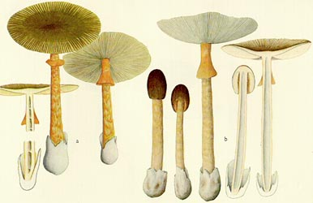
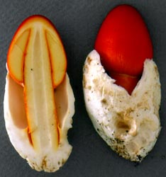
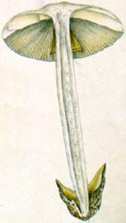
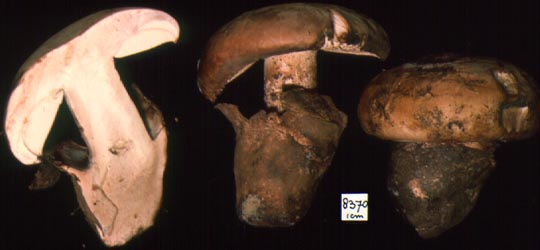
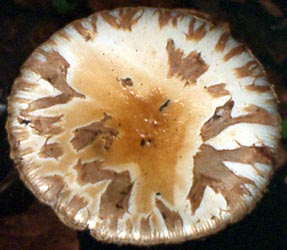
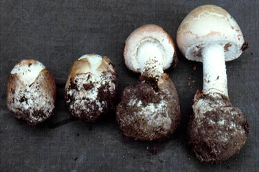
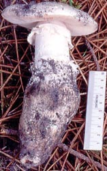
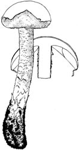
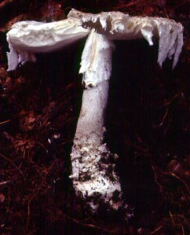
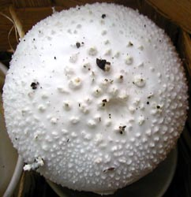
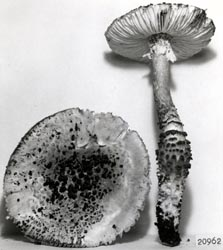
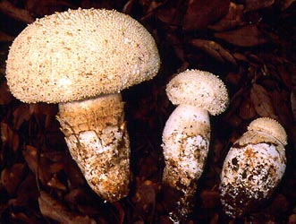
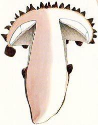
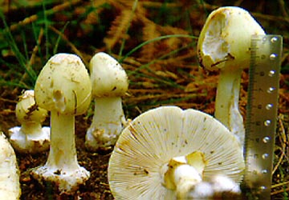
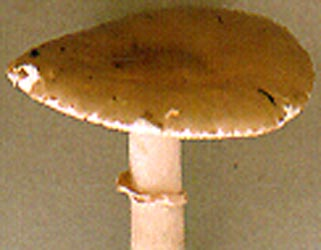
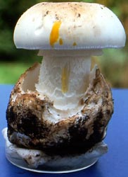
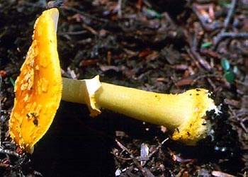
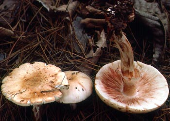
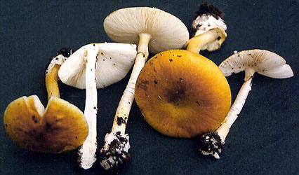
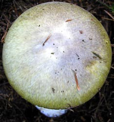
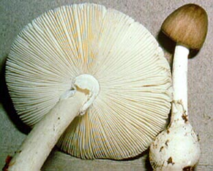
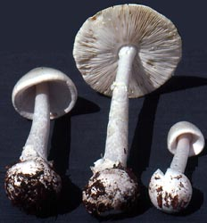
In most of the world this reduces the practical matter of identification of agaricoid specimens of Amanita to the tasks of finding in that specimen the same evidence that has been very clearly required since the publication of the thesis of Dr. Cornelis Bas in 1969. An agaricoid or secotioid mushroom is an Amanita if and only if you can demonstrate that the specimen
- It is hypogeous (it has lost the ability to mechanically discharge its spores and grows under ground).
- It is secotioid (it has lost the ability to mechanically discharge its spores and grows above ground) or agaricoid and exhibits the mode of basidiome development (ontogeny) that is called schizohymenial (growing from a solid mass without cavities in which all the parts of the mushroom develop in place and then have to be split apart in final stages of development).
If an unopened button of the species is available, and you find that all the developing elements (cap, stem, gills, volva) of a mature mushroom are visible as distinct, shadowy regions in a cross-section of the button and that these developing elements are interconnected by tissue so that there is no open space within the button, then
- has longitudinally acrophysalidic stipe tissue
- is not a species of Limacella.
you have demonstrated that the probable ontogeny of the button is schizohymenial—literally that the faces of adjacent gills must be split apart from each other as the development of the mushroom continues.If an agaric exhibits schizohymenial development it can only be an Amanita—this ontogeny is restricted entirely to the genus Amanita. Hence, you don’t have a Limacella.
Here is a simple method of separating dried specimens of Limacella and Amanita with microscopic examination of the gill edge. Check whether the edge of a gill is fertile (has spore-bearing basidia growing from it) or sterile (doesn't have basidia growing from it).The reader may think, "Surely, I recognize an Amanita when I see one." In response it must be said that, in many cases (especially with regard to taxa similar to locally familiar taxa), the reader probably does know his/her amanitas by sight. On the other hand, it still happens that professional mycologists name species in the genus Amanita that are not amanitas. Wouldn't you like to avoid that happening to you?
In the Amanitaceae, the fertile condition occurs only in Limacella. The sterile condition is found only in Amanita.
The sterile condition can be recognized as follows: In Amanita, the gill edge is comprised of a “cable-like” grouping of hyphae running the length of the gill edge and giving rise to balloon-like cells of various shapes (singly or in short chains) which separate, collapse, gelatinize, and/or break, facilitating the the separation of the gill edge from the stem or from the partial veil (ring, annulus, skirt) as the elements of the expanding Amanita basidiome are separating.